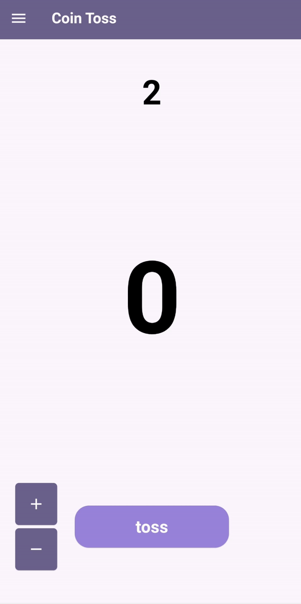
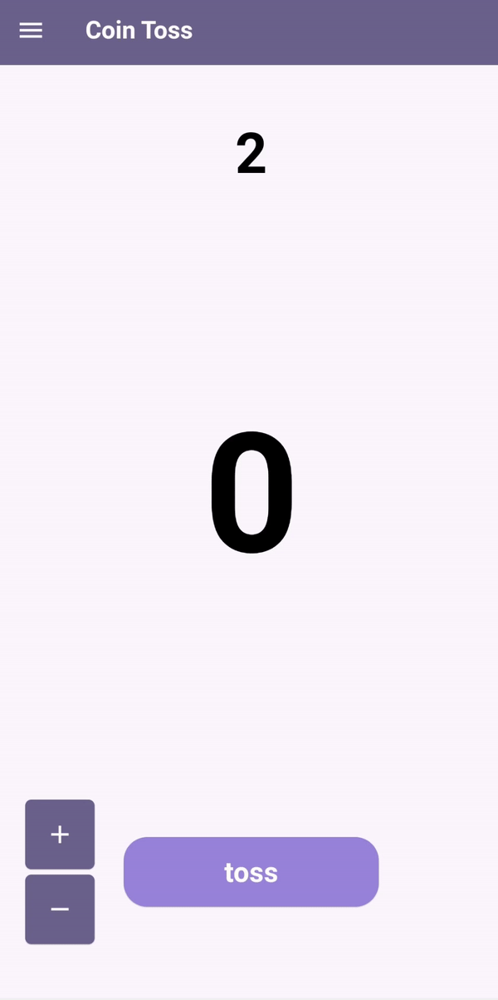

Science fair desk camera app - Project Projector

This was software for a science fair project written in python during the 10th grade. The app allows a camera to act as an overhead projector by applying a warping to either a selected or auto-detected area. It has a basic GUI to allow changing some settings and to define an area to warp/ project by 4 corner points using openCV Contributions and credit This was part of a science fair project of me and a friend. This program was made by myself and my friend worked on the harware components. At the time, we often used Microsoft Lens to scan test papers which inspired us to implement it in video form.
I see this project as the beginning of everything that follows on this page. This my first time coding anything and it was a huge shock when I made something that actually worked. This is what turned coding into a thing I thought I would never learn into something I could comfortably do to make other things. Digging down the rabbit hole of programming, I found out about more concepts like optimisation (which I did done of), and naming conventions (which I broke like 1000 of), but this set the ceiling even higher for things to learn. We did not win anything in this science fair, yet I always remember this as one "failure" I'm proud of.
This project was something that occured completely on a whim, but I'm very glad happened because it taught me that taking risks lead to good outcomes (sometimes). Going from literally zero coding knowledge to making a somewhat working program gave a great boost of confidence and allowed me to take on harder challenges in the future. GitHub link https://github.com/ntygithub/uploads/tree/main/Project%20Projector
Pengiun game
This is an unfinished game I began to make during a school break. It is a "platformer" style video gamne and takes much inspiration from other 2D platformers like Hollow Knight and follows a similar vibe. Contributions and credit This project was solely my own. Assets are drawn by myself except for this brick texture. I took a lot of inspiration from most notably Hollow Knight for the feeling. I watched many useful tutorials by "Bardent" on YouTube which helped greatly in making the game.
This was a lot of fun to work on during my holidays and taught me many new things. Many hidden complexities like: state machines, enemy behaviour, camera mechanics, level design, asset design really surprised me since they aren't usually things you think about while playing a game.
I worked on this game during the holidays when I had nothing else to do to pass time, but it was also a great opportunity to learn new things and to scratch a creative itch I had for a while. In a sense, it wansn't the intention to create something novel but to try mimic great works in the past, like how artists study the masters.
I wanted to make a platformer game and started by deciding whether to use a game engine and which to use. I figured using an engine would more painless than not and between Unity, Unreal, and Godot I arbitrarily chose Unity. I began by following a tutorial to add a character and objects, making sure they collide with each other, I then coded the movement controls for the character and added some platforms to jump onto. I then added two basic mechanics to the character which was sliding and attacking. At this point I felt there should be a proper character sprite so I learned a bit of animation and created walking, jumping, sliding, attacking animations in pixel art. I moved onto designing the first level and did so in a way that all basic controls had to be used to pass, acting like a tutorial. I then added 3 different enemies along with their animations and attacks and coded their behavior and movement. Naturally, I had to then implement a health system for the player and enemies. I felt it would be nice to track where the player had died before and so I implemented storing recent dead bodies into memory while writing a basic save system and also started on an inventory system. I finished off by drawing some more art for the background, made everything look a little nicer and added some menus. At this point I paused working on the project. GitHub link https://github.com/ntygithub/uploads/tree/main/Penguin%20game/Assets/scenes/Codes
Vex Over Under simulator
This is a driving simulator application for the VEX robotics game "Over Under" based on my team's robot. Its intended use is as a tool to practice driving around the specific field and objects relating to the game. Hence, all aspects are made to be as realistic as possible such as: camera angle, feeling of driving, interactions between robot and objects, proportion and physics of objects, and controls of the virtual robot. It uses a game controller e.g. Xbox which closely maps onto the VEX controller to control the robot. Basic robot functionality like extendible arms and an intake for the balls are also present to give a more complete and realistic driving experience. There is the ability to shoot balls onto the field which are used in the real life game to simulate an opponent or teammate trying to score points to practice blocking or scoring techniques. Contributions and credit Thanks to user "Sylvie" on vexforums for a blender model of the field perimeter I mashed together with CAD drawings of the field elements supplied by the VEX organisation. Thanks also to my 2 teammates from 3168T for playtesting.
This was significant since it was the first "original" idea I had which I was able to create as a useful tool. Here, the end product was the greatest point of satisfaction and I decided leave it at the state where it's useful for virtual driving practice, which it was intended for. There were also a lot of ideas, like a multiplayer mode, simulating autonomous code, opponent bots run by computer but time is only so plentiful so I left it at that, but they were cool things to think about.
Again, the problem was that I wanted a way to practice driving virtually and the easiest solution was to download someone else's product, yet there were none suitable which led me to try make my own. I was reasonably confident that I could make it in a reasonable timeframe coming from working with Unity in the past, so this gave a bit of confidence in things working out.
Having used Unity before in making a video game, I felt it would make a lot of sense to make the simulator here as there would probably be support for controller mapping, physics, and I was also familiar with the software/ language. I began first with figuring out the robot should drive and writing the controls for this to mimic the same drive as our real life robot , a game controller which is similar to the VEX one is used. I chose to not simulate actual wheels of the robot but made sure the robot could only drive when in contact with a surface. I then figured out how to import models of the VEX field and components into the environment and scaled them accurately. Then I worked on making the program "feel" realistic by adjusting things like center of mass of the robot, relative mass to the balls, resistance of the goals to balls being pushed in, driving speed, collisions with walls and balls, camera angle to mimic real life. Then, I added more controls to be able to shoot balls onto the field like in the real game (defensive), shoot balls to the opposite side (offensive), and added other components on the robot like the extendible arms and intake to push and grab balls. Lastly, I worked on smaller details like randomness of the balls shooting, tweaked interactions a little more, and made things look a bit nicer. At this point the program was useable for practice GitHub link https://github.com/ntygithub/uploads/tree/main/VEX%20simulator/Assets/thecode
Another holiday comes
Auction house scouter

This is a python script which searches through a game auction house and finds items based on parameters like the expected profit after resale, price compared to the cheapest option, and value of the item. Results are displayed in a scrolling feed, and it is set up to make a ping sound when there is a good deal or to send a notification to my phone. It gets auctions from the Hypixel API and can be configured to look at "buy it now items" or auctions ending soon or both. Contributions and credit The API is supplied by Hypixel
It was through this project that I actually learned what an "API" was and how to use it and handle data. Even though this was only inside a video game, I feel that there are large similarities to real life auction sites like eBay (which the game's was based off of) and learning how to utilise APIs in general was a useful tool.
An objective in the game is to make as much money as possible and reselling undervalued items for a profit was a very efficient way to do so. I sought to automate the process of manually looking through auctions and judging their profit margins.
I began by first figuring out how the auction house API worked and how to retrieve data from it. Handling this was relatively painless thanks to using python. Then, I needed a way to calculate the profit of every item and filter for the most profitable options. For "bidding" auctions this was done by subtracting the current bid by the mean of 5 lowest sales for that particular item which was stored in a list for faster reference in repeated items. Auctions far from the ending time generally have price no where near the price it would end at so I only considered those ending in less than 15 mins. I then created a way to view these auctions outside of the terminal and it would send a ping sound when a profitable auction was detected. I then realised that I would have to always be near my computer to not miss any items which is less than ideal so I found a way to also send a notification to my phone of the auction. GitHub link https://github.com/ntygithub/uploads/tree/main/Auction%20house%20scouter
Minecraft modding
The mod is for mostly "quality of life" and aesthetic improvements to a game in Minecraft. One feature is when a player joins, checking with the game's API their information e.g high scores, equipment to determine whether they are "worthy" or not to join a party. When playing the game, the time to complete different stages is tracked and displayed in a corner to give feedback on performance. Other metrics like how much each player contributed is also tracked automatically and displayed at the end of each game. There are also more miscellaneous features e.g automatically sending a status message when performing a specific action. Contributions and credit Code is written by myself but I read through the code of mods like "NotEnoughUpdates", "Skytils", "DungeonRoomsMod" and many others so my thanks goes out to their respective creators.
I enjoyed working on this mod because it allowed me to feel productive while I was relaxing playing a video game. I also found the learning and making process itself to be enjoyable and often switched between actually playing the game and working on coding the mod. I appreciated being able make use of learning how to use APIs previously and also that making a mod for this game in general was something I always wanted to do when I was much younger
One problem I encountered while playing the game was the need to check how "good" a new player was when they joined my group and the process I was doing before meant I had to open two different websites, search for the player's name, find the information I was looking for, and trying to do so quickly before people tired of waiting for me. I figured that It should be mostly straightforward to get the information itself, and also to display it inside the game. This saved time and also allowed to filter out less useful information and even automate processes like removing a player if they fell below some threshold for e.g their level.
I enjoyed the process of flip-flopping between finding some improvement I wanted to make while playing the game, and trying to code the improvement into the mod as it meant I wouldn't run out of ideas. When I would get stuck on figuring out how to implement something, I would read the code of other people making mods for similar purposes, and sometimes I would get lucky and they would be working on the exact same thing as myself. Other times there might have been only loosely related examples that still gave some insight and inspiration on how to solve the problem. Testing my implementations was extraordinarily easy this time as I would be playing the game either way and so the constant feedback really helped to refine everything. GitHub link https://github.com/ntygithub/uploads/tree/main/Minecraft%20mod/src/main/java/com/example/ntymod
For school
Powerpoints for Maths Olympiad club
While LaTeX is not really coding, I was glad that spending time learning it had come in handy when I needed to write some more "mathy" documents and it streamlined the process of making everything a lot. Contributions and credit
Mark scheme collator
This is a python script that looks for questions containing keywords in Cambridge examination papers for a few subjects. At the same time, it retrieves the question and part numbers using regex matching and finds the corresponding answer in an answer paper. It displays the question and answer in a feed like shown above. Contributions and credit
This is yet another project that I had the idea of doing in the past but still had no clue how to. I'm glad that with more experience behind me that I could make it work. Before I remembered myself using adobe acrobat and opening many papers at once to look for certain terms but doing it in this new way is much less burdensome.
Looking at definition questions in this way was particularly useful to studying terms and could be done by searching for phrases like "define" or "explain what is meant by". I feel also that I worked on this while studying for school exams to take a break from memorising content while still doing something that "felt productive". Either way it was a good learning experience whether for my school subjects or for practice coding something. GitHub link https://github.com/ntygithub/uploads/tree/main/Mark%20scheme%20collator
Flutter apps
 

These few apps have basic functions: stickey notes, writing with a stylus, random number generator, and a school timetable because I always occasionally forget it somehow Contributions and credit
Making an app was another daunting task at first due to lack of experience but like my other "first time" projects, finishing it gave me a little more confidence that I could be able to make something similar for a future project and it becomes "another tool in the toolbox"
I found myself occasionally forgetting when my classes started and ended for some reason and usually just followed someone else when they left. Most people would probably tell me "just memorise your timetable" but that wasn't satisfying to me and so I thought I would build a page that tells me when my previous class finished, current class is (incase I can't tell the difference between physics and biology), and next class is. This was good to just practice using the language and coding the formatting. The coin toss app actually has come in handy when my friends and I can't decide where to eat lunch, so instead of googling "coin toss" I can open the app instead and do the same thing. GitHub link https://github.com/ntygithub/uploads/tree/main/Flutter%20apps/lib